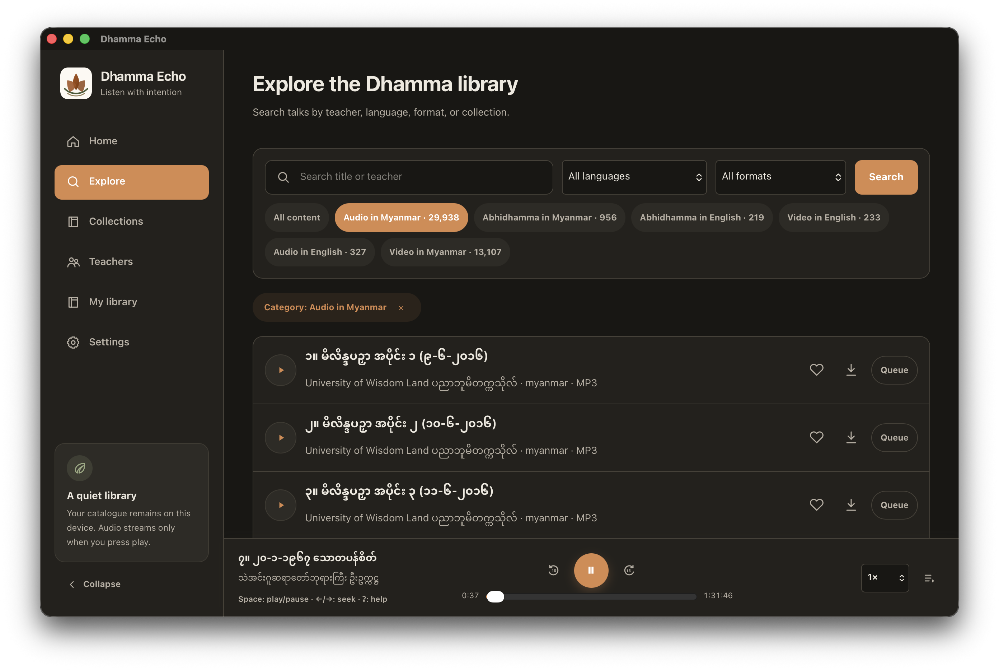

Discover the catalogue
Browse 30,563 talks from 257 teachers. Search titles and teachers, explore audio collections, then narrow results by category, language, and audio format.
Discover teachings, keep your place, and listen without accounts, analytics, advertisements, or background noise.
Your listening state stays on your device. The catalogue opens read-only, and the app exposes only six purpose-built desktop commands.
Search by title or teacher, filter the catalogue, and keep the current teaching visible while you browse.

Every feature supports a simple path: find a teaching, listen, and return when you are ready.
Browse 30,563 talks from 257 teachers. Search titles and teachers, explore audio collections, then narrow results by category, language, and audio format.
Play supported MP3 talks with seeking, 15-second jumps, speed, queue management, and resilient HTTPS retry.
Favorites, history, queue, preferences, and resume positions remain in local storage on your device.
No account, telemetry, advertisements, tracking pixels, or cloud sync. Dhamma Echo works as a quiet desktop tool.
The interface keeps the current teaching, time, progress, and essential controls available without turning listening into a dashboard. Its warm light interface keeps the library calm, clear, and consistent.
“Listen with intention.”
A Svelte 5 + TypeScript interface runs inside Tauri 2. Rust opens the bundled SQLite catalogue read-only, validates every request, and returns typed catalogue data through a narrow command boundary.
Read the architectureDhamma Echo is MIT-licensed software. Study the architecture, verify the privacy model, build it locally, or contribute a focused improvement.